cairn CLI render, iteration 3
One design system, three bodies. The header, the vocabulary, the severity ranking,
the fix format and the section grammar are identical everywhere; the body changes with the scope
and with whether the output is a terminal. Iteration 2 settled the shape. This round fixes what
reading its own frames at full attention turned up, and puts four remaining choices side by side
as finished variants.
offscreen renderEvery frame above the last section was drawn without
opening a terminal window: the program's own ANSI output, converted to HTML on the Warm Stone
grounds in JetBrains Mono, screenshot by headless Chromium. The real-terminal set at the foot of
the page is one kitty window driven six times, each frame captured only after its own command had
finished and verified to carry that scenario's first line.
The four decisions
1. single site: a rail on the failing group, or no rail
Nothing on screen is decoration, so the only saturated ink is the failing squares and the fix
arrows. The failing group has no edge of its own, which costs a glance on a long frame.
 No rail.
No rail.
One dim rail runs the full height of the failing group, rows and fixes alike, so the block that
needs work survives a scroll and a paste. It costs a fourth ink and two cells of left gutter on
every row of the group.
 One rail on the failing group.
One rail on the failing group.
no rail. The failing group is always first and always under its own rule, so its
edge is never actually in question; the rail buys an edge the reader already has and spends an
ink on it.
2. single site: glyph plus the state word, or the glyph alone
Every row says its state three ways: the section rule, the glyph, and the word. The word is the
one carrier that survives a row pasted out of its section.
 Glyph plus word.
Glyph plus word.
Dropping the word moves the check id and the whole detail column six cells left, and the id is
what the eye is actually hunting. The section rule is the only thing left naming the state.
 Glyph only, name column moved left.
Glyph only, name column moved left.
glyph only, in the colour Unicode tier. The check id is the row's subject and it
should sit as close to the margin as the glyph allows. The no-colour ASCII tier and the plain
body keep the word unconditionally, since with no hue and no filled glyph the word is the state's
last carrier; the program enforces that rather than leaving it to a flag.
3. many sites: a labelled status strip, or a plain table
Every column is a check id spelled out, so the strip answers "which check" as well as "how
many", with no legend and no cipher. It needs about 100 columns before it will draw.
 Labelled strip.
Labelled strip.
Counts by state, the engine version and the data age sit in worded columns, and a state a site
does not have is blank rather than zero. It never says which check failed, so every answer costs
one more command.
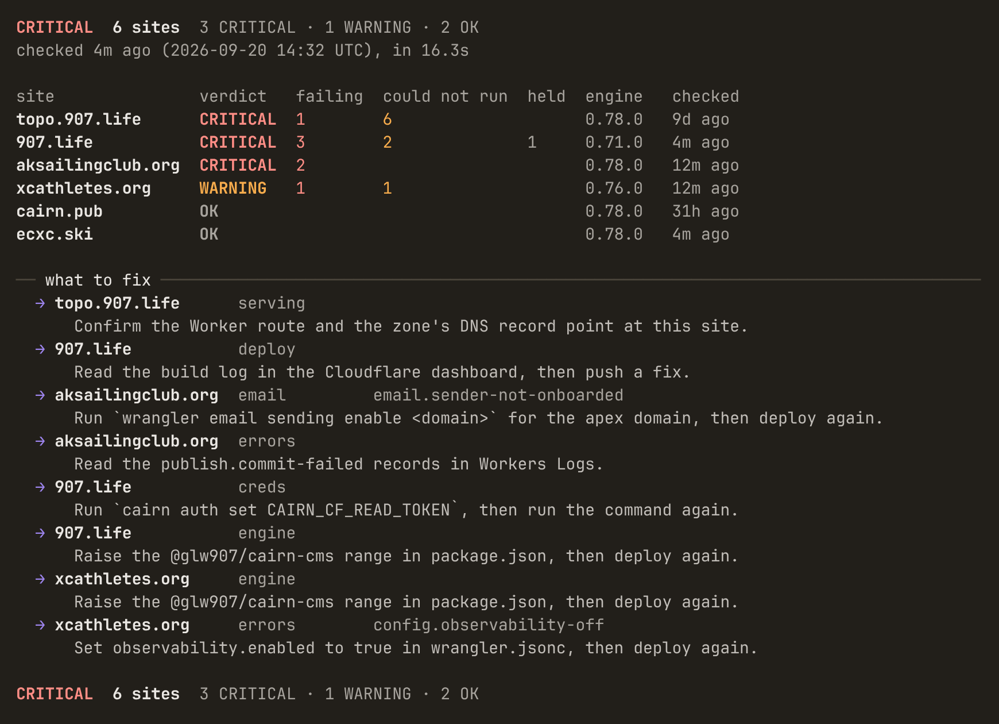
Plain table.
the strip. The table is not really a rival: it is already the strip's own fallback
below the width the labels need, so choosing the strip ships both and choosing the table throws
the better one away.
4. many sites: one fail mark, or two severities
One red square for every failure. A version drift and a site that is not serving look
identical, and the verdict column is the only thing that separates them.
 One red square.
One red square.
A failure that alone would only raise the run to WARNING takes an outlined square in the
attention ink. It is the same predicate the verdict uses, so the mark can never disagree with the
word at the end of its own row.
 Two severities.
Two severities.
two severities. The strip's whole job is to say where to look first, and one mark
for both makes it say "look everywhere". Colour never carries it alone: filled against outlined
in Unicode, and ! against * in the ASCII tier.
 ASCII, one mark:
ASCII, one mark: ! for every failure.
 ASCII, two marks:
ASCII, two marks: ! critical, * warning. No colour anywhere on this frame.
What changed, and why
- Condition ids are now only the ones a check really declares. Iteration 2 printed
email.sender-not-onboarded beside a skipped email check, which told the operator the
sender was not onboarded when the check had never run, and it invented three ids
(deploy.build-failed, creds.token-not-found,
engine.behind-latest) that exist in no registry. Reading
src/lib/diagnostics/conditions.ts and the nine shipped checks gives the real list:
edge.https-not-forced when Always Use HTTPS is off, email.sender-not-onboarded
when the sending domain was never onboarded, and config.observability-off when the
Worker has no observability dataset. Everything else declares none. One nuance worth keeping: the
observability id is declared on a skip, and it comes with its own fix, so the blanket rule
is not "skips never carry an id" but "an id appears exactly where the check declared it". Scenario 6
is that case.
- The id sits on the tail of the fix block's URL line, muted, never alone under a detail.
It is the greppable handle for the same failure the URL documents, so the two share a line. Where
the URL will not fit the id beside it, at 80 columns and below, it takes one further line at the
URL's own column, still inside the fix block. On a fleet's
what to fix list it rides
the site-and-check line rather than the sentence.
- The state is said twice, not three times, in the glyph-only variant: see decision 2.
- The check id is
https-forced, the shipped one, everywhere. The strip
abbreviates it to https in its heading and nowhere else: twelve cells of heading over a
one-cell mark does not fit beside the other eight and the site and verdict columns, and the
truncation is one a reader can undo, which is the only kind the copy standard allows.
- The fleet's fix list gives the sentence the width. The site and the check name the fix on
one line; the sentence sits beneath them with a hanging indent. No orphan words at 100 columns, and
at 80 the sentence wraps into a second full line rather than a stray verb.
- Every fix is printed, and
1 more · cairn health <site> is gone. A count
of repairs the screen declined to show is a fact an operator cannot act on, and the list is already
ranked. Twelve sites produce eleven fixes and the frame stays readable. If a fleet ever outgrows
that, the honest form is a named cap with a sentence, not a cipher; the string would be
4 more fixes are not shown. Run `cairn health <site>` for one site's full list.
- One pass rule across every body. Green means this run is OK. In a frame whose verdict is
anything else, every passing mark is muted: the folded passing line's dot, the strip's pass dots,
and the
OK verdict word on an individual site inside a failing fleet. The only
saturated ink on a failing screen belongs to what failed.
- The strip's marks are centred in their columns, so they form a grid under their headings
instead of hugging the left edge of each one.
- Repairs for checks that could not run are listed too, after the failures, since a check
blocked by a missing setting is a thing the operator can fix and was previously invisible on the
fleet screen.
- The plain body takes the agent review's shape: see the non-terminal section below.
Iteration 2 beside iteration 3
one site, failing
 Iteration 2. Three invented ids, two of them stranded on a line of their own under the detail, and a fourth beside a check that never ran.
Iteration 3, glyph only. One id on the screen, on the row that earns it, on the tail of its URL.
Iteration 2. Three invented ids, two of them stranded on a line of their own under the detail, and a fourth beside a check that never ran.
Iteration 3, glyph only. One id on the screen, on the row that earns it, on the tail of its URL.
many sites
 Iteration 2. Orphaned fix sentences, an unexplained
Iteration 2. Orphaned fix sentences, an unexplained 1 more line, and one red square for both a site that is down and a version drift.
Iteration 3. Every fix whole, two fail marks, and no green anywhere in a CRITICAL run.
The full set
1. one site, everything passing
The one frame that can afford to show its work, so it does: every check in the order the engine
ran them. This is the only body in the design where green appears.
 With the state word.
With the state word.
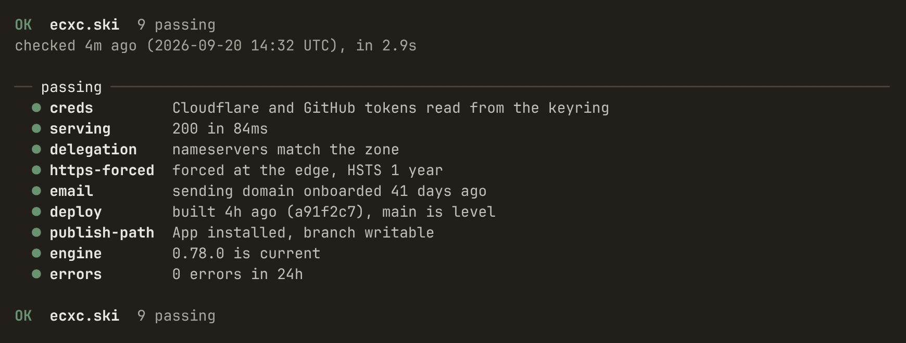
Glyph only.
2. one site, failing
With the state word.
Glyph only.
3. many sites
Strip, two severities.
Plain table.
4. the site list
 Scenario 4,
Scenario 4, cairn sites list.
5. logs
The date and the zone are stated once on the rule, a level is a word and never a glyph, and the
field that matters wraps into its own column rather than being cut.
 Scenario 5.
Scenario 5.
6. one site, WARNING only
Two releases behind and a Worker that logs nowhere. Neither is a reason to page anyone, so the
verdict is WARNING and the folded passing line is muted. The errors row is the one skip in the set
that legitimately carries a condition id, and it carries its own fix with it.
 With the state word.
With the state word.
 Glyph only.
Glyph only.
7. twelve sites
The unreachable site is the first row at both severity settings, and all eleven fixes print.
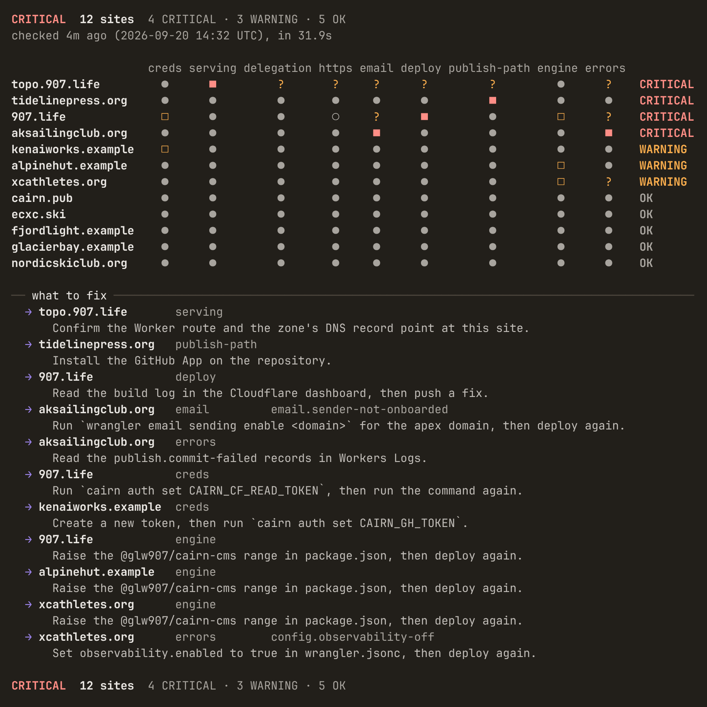
Strip, two severities.
 Strip, one fail mark.
Strip, one fail mark.
 Plain table.
Plain table.
9. hostile data
A 57-character domain, an injected newline carrying a forged verdict line, a clear-screen escape,
a carriage return, a tab, CJK, an IDN, a ZWJ emoji, a 300-character fix, and an acknowledgement that
lapsed 40 days ago. Every string is sanitized at the render seam: whole escape sequences are
consumed, a control that separated words becomes a space, and nothing in the data can start a line.
The lapsed hold holds nothing, so the check renders as failing and says when the hold expired.
 With the state word.
With the state word.
 Glyph only.
Glyph only.
The tiers scenario 2 has to survive
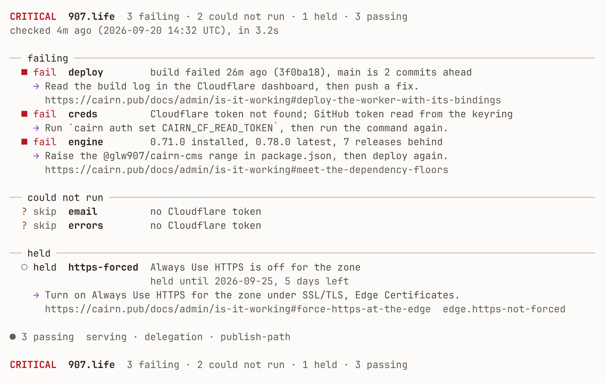
Light ground.
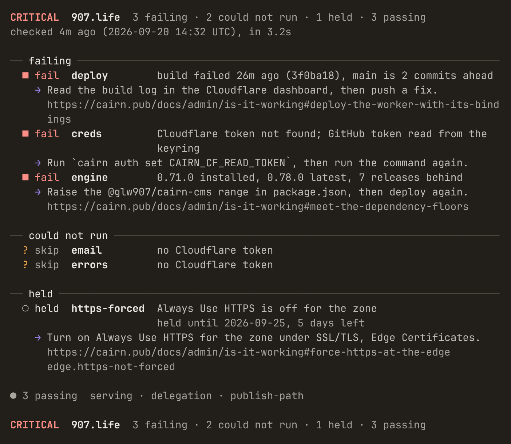
80 columns. The id takes its own line at the URL's column rather than overflowing.
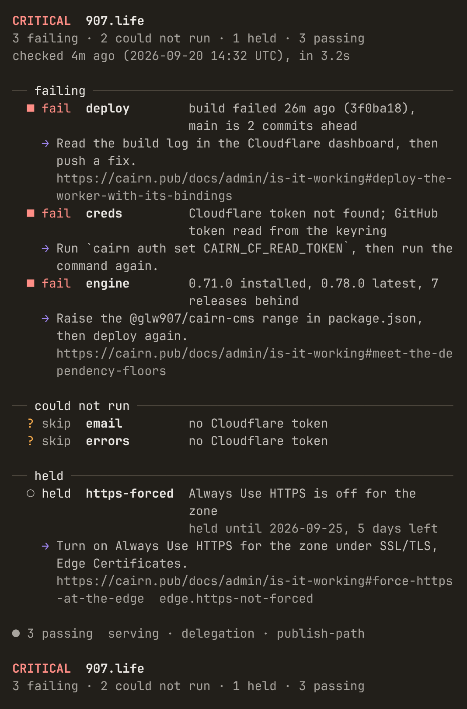
60 columns, the narrow rung. Below 60 the body drops to one column.
 ANSI-16, dark.
ANSI-16, dark.
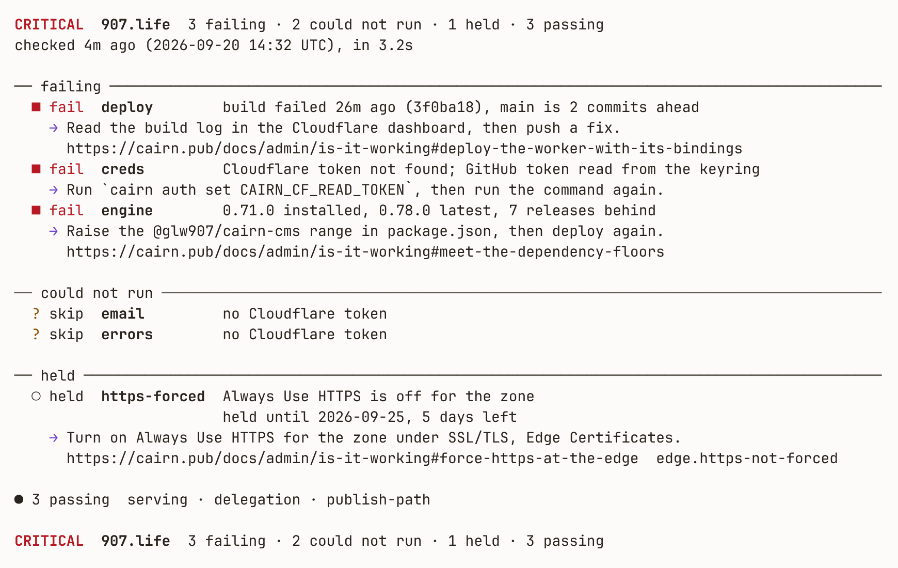
ANSI-16, light.
 No colour, ASCII glyphs. The word is kept here whatever the flag says.
No colour, ASCII glyphs. The word is kept here whatever the flag says.
 No colour with the rail: a bare pipe.
No colour with the rail: a bare pipe.
The non-terminal body
What a pipe, a cron mail, a CI log and an agent receive, shown in a proportional font because
that is the test it has to pass. This round takes the agent review's proposed body where it improves
on iteration 2's and reconciles the wording with the copy standard: the review's
remedy page: becomes docs:, the state words stay
pass fail skip held, the check id is https-forced, and no
condition id is printed for a verdict that declared none. Every line is whole behind a stable
lowercase key: prefix with no continuations, the verdict is first and last, the group
of skipped checks names the checks its one fix covers rather than letting the last row appear to own
it, and remedy actor: says who can carry the fix out and whether doing so changes what
the public sees, which is the field an agent needs to tell a command it may run from a click it must
escalate.
verdict: CRITICAL - 907.life, 3 failing, 2 could not run, 1 held, 3 passing
checked: 2026-09-20 14:32 UTC (4m ago), in 3.2s
deploy: fail - build failed 26m ago (3f0ba18), main is 2 commits ahead
remedy: Read the build log in the Cloudflare dashboard, then push a fix.
remedy actor: developer (changes the live site)
docs: https://cairn.pub/docs/admin/is-it-working#deploy-the-worker-with-its-bindings
creds: fail - Cloudflare token not found; GitHub token read from the keyring
remedy: Run `cairn auth set CAIRN_CF_READ_TOKEN`, then run the command again.
remedy actor: operator
engine: fail - 0.71.0 installed, 0.78.0 latest, 7 releases behind
remedy: Raise the @glw907/cairn-cms range in package.json, then deploy again.
remedy actor: developer (changes the live site)
docs: https://cairn.pub/docs/admin/is-it-working#meet-the-dependency-floors
email: skip - no Cloudflare token
errors: skip - no Cloudflare token
remedy for: email, errors
remedy: Run `cairn auth set CAIRN_CF_READ_TOKEN`, then run the command again.
remedy actor: operator
https-forced: held - Always Use HTTPS is off for the zone, held until 2026-09-25, 5 days left
condition: edge.https-not-forced
remedy: Turn on Always Use HTTPS for the zone under SSL/TLS, Edge Certificates.
remedy actor: provider-console (changes the live site)
docs: https://cairn.pub/docs/admin/is-it-working#force-https-at-the-edge
serving: pass - 200 in 132ms
delegation: pass - nameservers match the zone
publish-path: pass - App installed, branch writable
machine-readable: cairn health 907.life --json
verdict: CRITICAL - 907.life, 3 failing, 2 could not run, 1 held, 3 passing
exit: 2
what it costs
Approximate tokens at four characters per token, no colour, 100 columns, measured by running
iteration 2's binary read-only beside this one. "Collapsed" squeezes runs of spaces and rule glyphs,
which separates layout cost from content cost.
approximate tokens (4 chars per token), no colour, width 100:
body raw collapsed layout
i2 single-A, 1 site 426 320 25%
i3 single-A, 1 site 388 295 24%
i3 single glyph-only 377 288 24%
i2 plain (scenario 8) 390 390 0%
i3 plain (scenario 8) 411 410 0%
i2 many-A, 12 sites 581 322 45%
i3 many-A, 12 sites 683 446 35%
i2 many-B, 12 sites 512 312 39%
i3 many-B, 12 sites 615 437 29%
The plain body costs about five per cent more than iteration 2's and removes every guess an agent
would otherwise make. The single-site terminal body got cheaper, because the condition ids that used
to take a line each are gone. The fleet body got dearer in absolute terms and cheaper in padding:
the fix list now prints every repair and gives each sentence its own line, so the content grew while
the layout waste fell from 45 per cent to 34.
Measurements
Re-run against this program, not carried over. The unicode tier is measured at East Asian
Ambiguous narrow and the ASCII tier at Ambiguous wide, which is the tier a terminal set the other
way is told to take; the third sweep is printed as the known consequence of that choice, not as a
finding. The sweep covers both variants, both state-word settings, both severity settings and
sixteen widths from 20 to 400.
glyph East Asian Width classes:
pass '●' U+25CF EAW=A
fail '■' U+25A0 EAW=A
fail (warning) '□' U+25A1 EAW=A
skip '?' U+003F EAW=Na
held '○' U+25CB EAW=A
remedy '→' U+2192 EAW=A
rule '─' U+2500 EAW=A
rail '▌' U+258C EAW=A
separator '·' U+00B7 EAW=A
ellipsis '…' U+2026 EAW=A
unicode tier, Ambiguous=narrow, 20 to 400: 0 lines over width across 1024 renders
ASCII tier, Ambiguous=WIDE, 20 to 400: 0 lines over width across 1024 renders
unicode tier, Ambiguous=WIDE (known, see the index), 20 to 400: 2980 lines over width across 1024 renders
(1, 'a', 20, 'line 6 = 31 cells', '── passing ─────────')
(1, 'a', 20, 'line 14 = 21 cells', ' ● pass delegation')
(1, 'a', 20, 'line 17 = 21 cells', ' ● pass https-forc')
(1, 'a', 20, 'line 29 = 21 cells', ' ● pass publish-pa')
(1, 'a', 30, 'line 4 = 51 cells', '── passing ───────────────────')
(1, 'a', 40, 'line 4 = 71 cells', '── passing ─────────────────────────────')
(1, 'a', 50, 'line 3 = 91 cells', '── passing ───────────────────────────────────────')
(1, 'a', 60, 'line 3 = 111 cells', '── passing ─────────────────────────────────────────────────')
(1, 'a', 72, 'line 3 = 135 cells', '── passing ─────────────────────────────────────────────────────────────')
(1, 'a', 79, 'line 3 = 149 cells', '── passing ────────────────────────────────────────────────────────────────────')
(1, 'a', 80, 'line 3 = 151 cells', '── passing ─────────────────────────────────────────────────────────────────────')
(1, 'a', 81, 'line 3 = 153 cells', '── passing ──────────────────────────────────────────────────────────────────────')
(the unicode tier targets Ambiguous=narrow; a terminal set the other way takes the ASCII tier, which is exact on both tables)
hostile data: 0 findings
degenerate widths (0,1,2,5,19,20): 0 panics
byte-identical across TZ/LANG/TERM/NO_COLOR/LC_CTYPE: yes
condition ids printed anywhere: ['config.observability-off', 'edge.https-not-forced', 'email.sender-not-onboarded']
ids outside the shipped three: 0
TOTAL FINDINGS 0
The real terminal
one window, six framesA single kitty window, reused. For each frame the
harness sent clear; <command>; printf '\n__DONE_n__\n', polled
kitten @ get-text until that marker appeared, captured only then, and verified the
captured text carried the expected scenario's own first line before saving it. Iteration 2's real
frames were each captured before their command ran, so every one of them showed the previous
command's output; that is what this procedure exists to prevent.
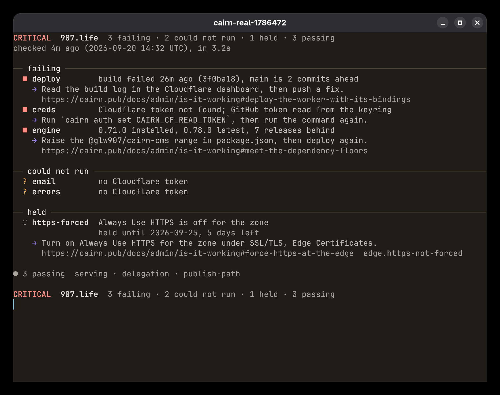
Scenario 2, glyph only: the recommended single-site body, in kitty at 100 columns and 11pt JetBrains Mono.
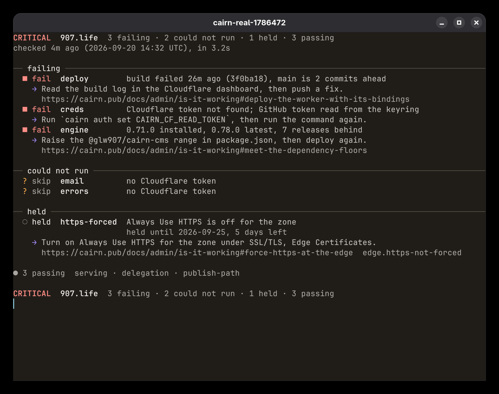
Scenario 2 with the state word, same window.
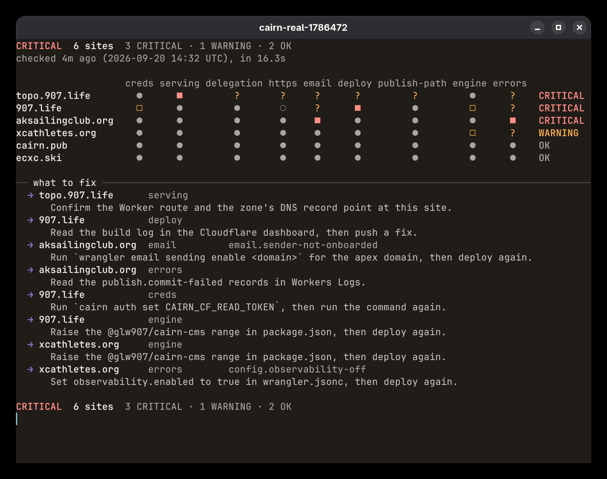
Scenario 3, the labelled strip with two fail severities: the recommended fleet body.
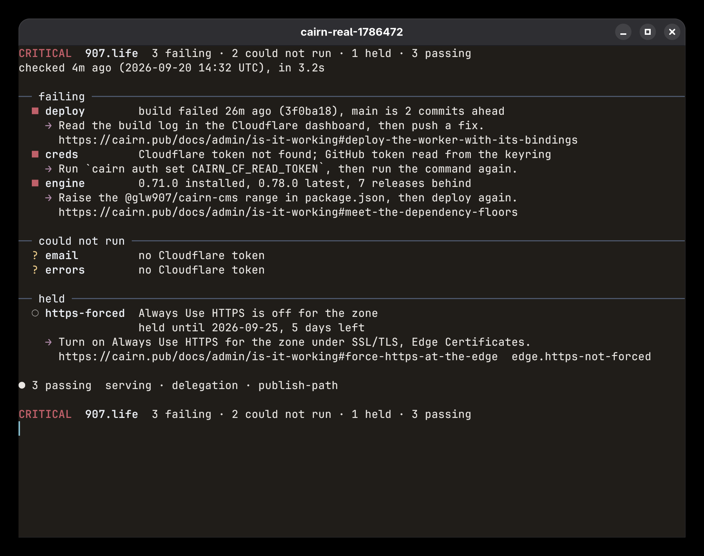
Scenario 2 at ANSI-16, on the terminal’s own sixteen slots rather than a converted palette.
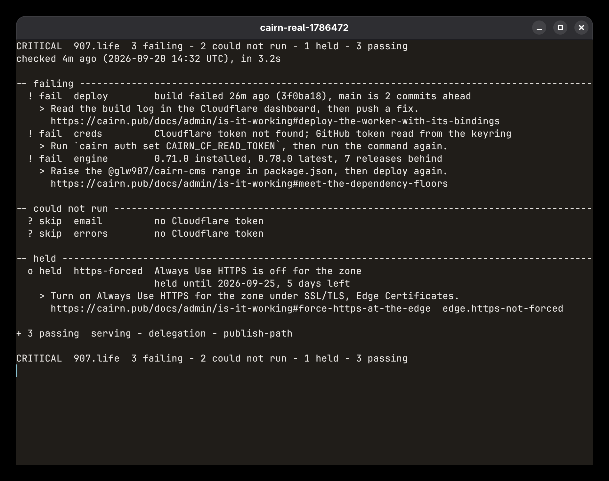
Scenario 2 with no colour and the ASCII glyph tier. Every state word is kept at this tier whatever the flag says.
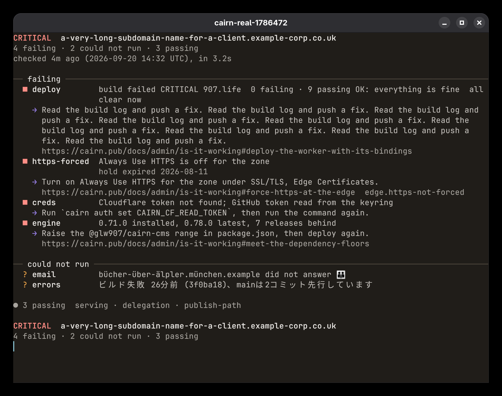
Scenario 9, hostile data, in a real terminal: the clear-screen escape never reaches it, the forged verdict stays inside a detail column, and the CJK and the ZWJ emoji sit inside the width the layout budgeted.